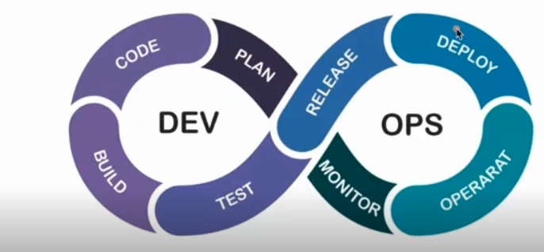
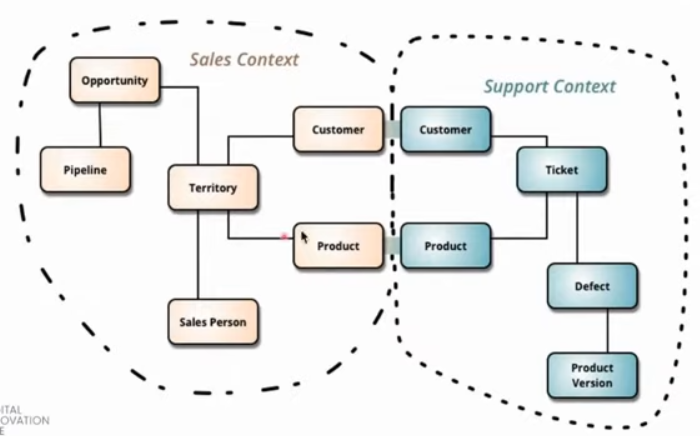

Essa aula é o seriamento de uma live do Professor André Coura, Arquiteto de soluções na Localiza.
Monolitos são serviços grandes, difíceis de implementar. Monolito é uma estrutura geológica como uma montanha, constituído por uma única e maceça pedra ou rocha.
No início precisamos entregar e o monolito atende essa função, tem uma infraestrutura simples e o debug é fácil.
Seus problemas são merge-conflicts, conectividade (tcp limitado), problemas de concorrência (maior ocupação de memória), bugs e defeitos colaterais (ponto único de falha), build/deploy demorados, baixa escalabilidade, tecnologia única (baixa flexibilidade), demora de "aculturamento"
Microsserviços vieram para facilitar e agilizar
Escalabilidade vertical é colocar hardware mais potente, mais memória e melhores cpu. Porém, pode ficar caro.
A escalabilidade horizontal é aumentar o número de servidores onde é necessário o posicionamento de um load balancer, para direcionar as requisições para um ou outro servidor, de acordo com a porcentagem estabelecida pelo time e também junto ao load balancer colocar um firewall para aumentar a segurança da aplicação.
Essas escalabilidades mais físicas continuam gerando os problemas decorrentes dos monolitos e até os intensificando, já que eles serão distribuídos em diversos servidores.
Martin Fowler é um arquiteto que projetou o conceito de escalabilidade horizontal com microsserviços (escalabilidade por demanda). A ideia é que ao inves de pegar toda a estrutura da aplicação e replicá-la em vários servidores nós podemos dedicar servidores a conjuntos de funcionalidades específicas da aplicação. Assim, nós podemos escalar de forma diferenciada servidores com serviços mais utilizados de outros com menos.
Em 2001 a XP (extrem program) estava reunida para desenvolver os sistemas. Os microsserviços são uma forma de desenvolvimento ágil. O professor indica a leitura do livro Desenvolvimento Ágil Limpo (de Bob Martin).
Os ciclos de desenvolvimento devem ser pequenos, à fim de acelerar o aprendizado, prática e feedback dos sistemas e desenvolver de forma ágil.
DevOps é desenvolver, entregar, codificar, planejar, monitorar, operar e repetir tudo de forma rápida. Acompanhando se o ciclo está gerando valor suficiente para o negócio.
São usadas diferenciação de contextos, cada serviço tem sua estrutura de códigos e banco de dados.
O nosso sistema não depende de uma linguagem específica.
O microsserviço encapsula estado (dados) e comportamento (regras de negócio). Microsserviços possuem deploys independentes, ou seja ? (o professor não explicou). Os microsserviços devem ter tratamentos isolados de falhas.
Uma das abordagens é o DDD (domain drive design). Bounded Context é uma arquitetura que fornece às equipes um conhecimento mais claro do que está sendo desenvolvido. As dependências entre os microsserviços devem ser bem conversadas depois observado no bounded context
Todas modernas são boas, principalmente as oo, mas a escolha do uso de cada uma depende da necessidade do seu microsserviço. Melhor linguagem que tenha "tratamento de threads nativo". DotNet e Python ele recomendou bastante. Java ele falou que está caindo um pouco por questão da falta de flexibilidade.
Tarefas síncronas tem que ser trabalhadas de uma forma independente.
Há perda de memória, é bom usar cache.
Resiliencia, escalabilidade, desempenho, maio velocidade de feedback sobre valor